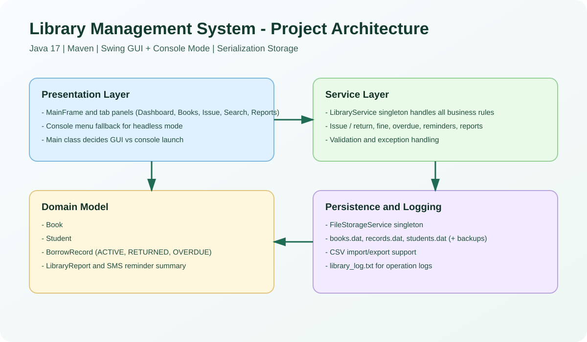
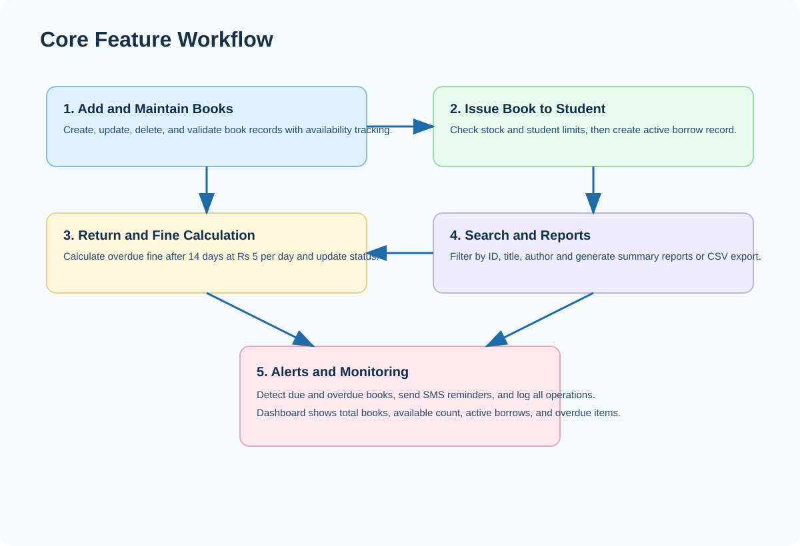
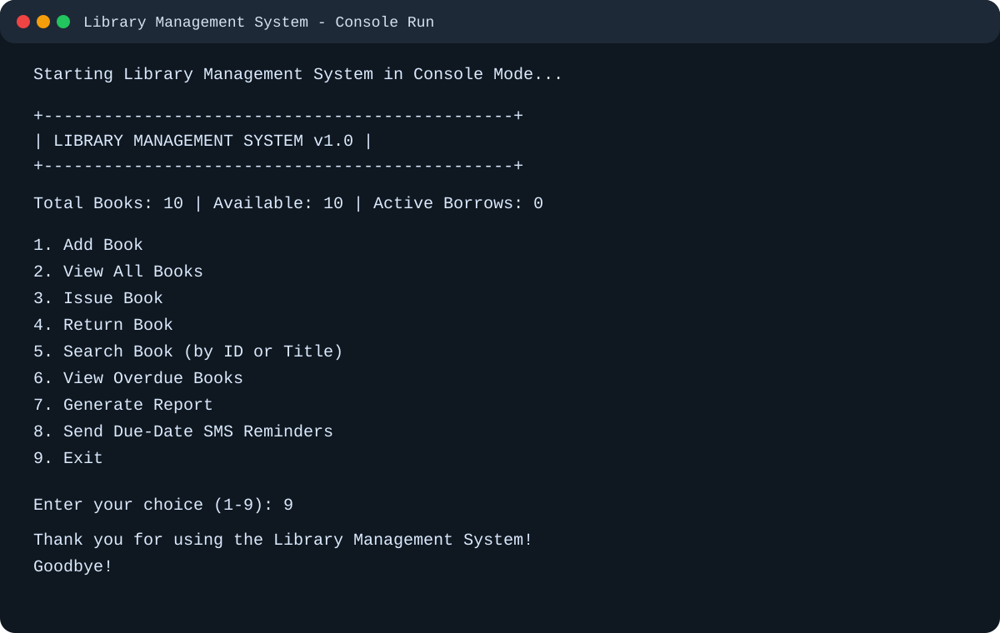

Library Management System - Project Report
Name: HARIKRISHNAN A
Roll Number: 24EC029
Project Type: Java Course Project
Abstract
The Library Management System is a Java desktop application that automates day to day library tasks through a Swing GUI and a console fallback mode. It handles book lifecycle, issue and return operations, overdue tracking, fine calculation, reporting, and data persistence.
Problem Statement
Manual tracking of books and borrow records can cause errors, delays, and reporting gaps. The project solves this by introducing a structured software system with validation, searchable records, and automated alerts.
Objectives
- Build a complete object oriented Java application for library workflows.
- Provide both graphical and console based interfaces.
- Maintain clean separation between UI, business logic, and storage.
- Persist records and support report exports.
Technology Stack
| Component | Technology |
|---|---|
| Language | Java 17 |
| Build Tool | Maven |
| UI | Java Swing |
| Persistence | Object Serialization (.dat) |
| Logging | java.util.logging |
Project Images
High Level Architecture

Feature Workflow

Console Mode Snapshot

Implemented Features
- Add, edit, delete, and search books
- Issue and return with availability checks
- Overdue tracking and fine calculation
- Dashboard and report generation
- CSV import and export
- SMS reminder integration
Conclusion
The project demonstrates practical software engineering using object oriented design and a modular architecture. It is suitable for academic presentation and can be extended to database backed and web based versions in future.